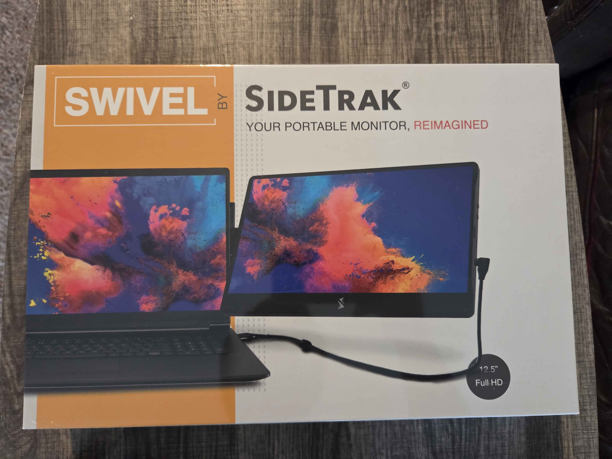
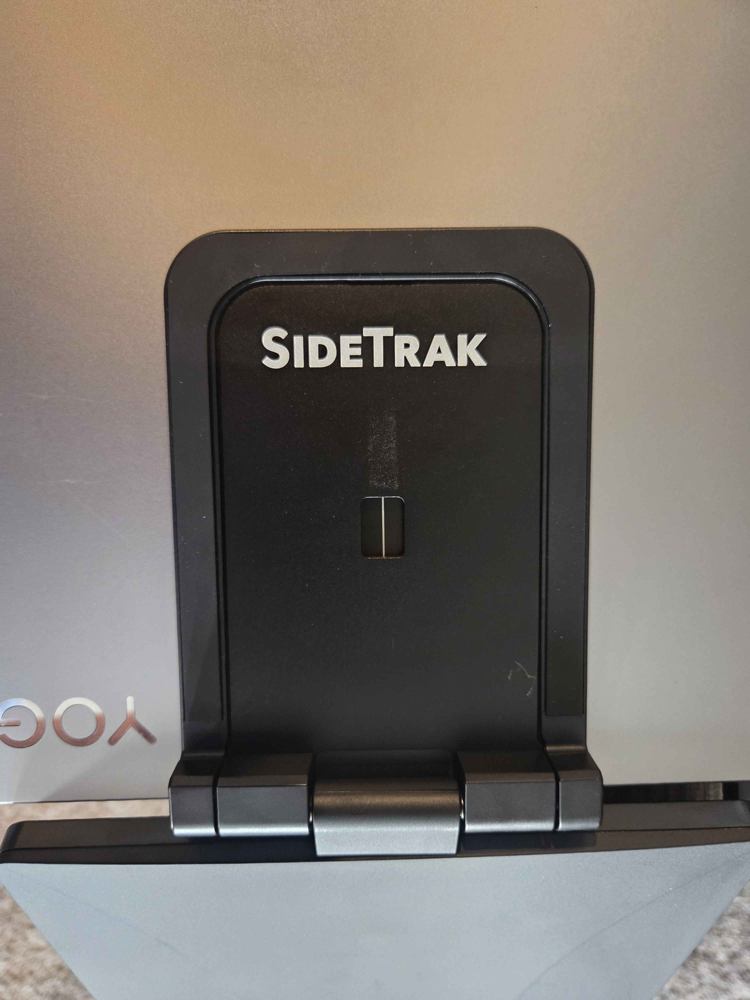
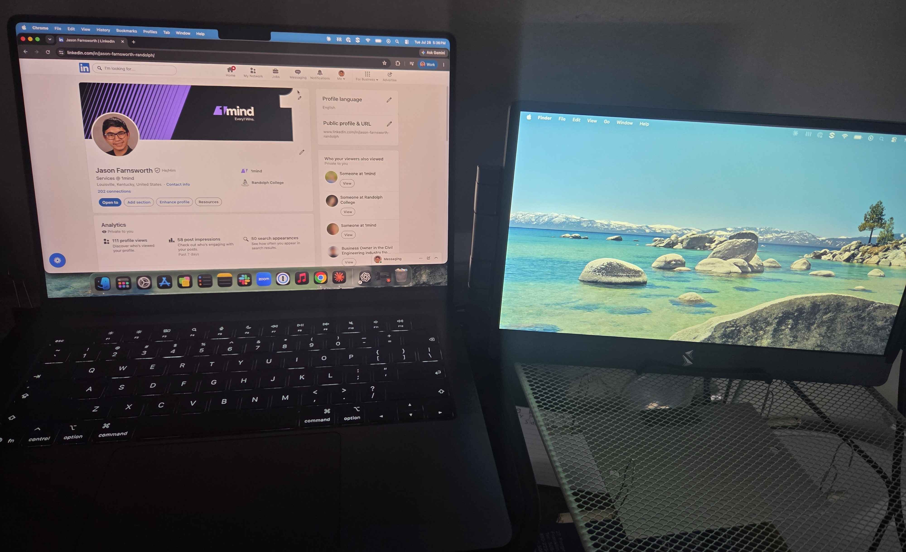

I first found out about this product since one of my college professors used it during my time at college. After moving, I started working at home and wanted a portable second monitor that wouldn’t take up space on my desk, as my desk was pretty small and jam packed with stuff already. I ordered it on a Saturday and the estimated arrival day was the following Friday, though it arrived by that Tuesday. The original price was ~$280, but I bought it on sale for ~$150.

Upon opening the box, everything was packed into it neatly, with the monitor on top, then the manual, and then the cords and magnets underneath it. The setup was pretty simple, however I still found a way to be confused. After installing the magnet on my laptop correctly, the part that attached to the magnet was flipped, so the magnetic attraction wasn’t as strong and made it easier for the monitor to slip down. After watching the video that was linked on their instructions, it dawned on me to flip the piece, and then the magnetic attraction was much stronger.

So far, the monitor is serving me well both in my personal project use as well as my actual job. The monitor attaches to my personal laptop via the magnet, and I just have the monitor next to my MacBook since I didn’t want to attach the magnet to my work laptop (since the instructions refer to the magnet as being a permanent addition until you remove it, making the adhesive no longer usable).

Overall, I really enjoy the monitor and find it very useful in both my personal projects and actual work. I love how I can still feel “mobile” and not tied down to a desk like a traditional monitor, and it’s seamless moving the monitor for both of my laptops. Its original price of ~$280 is a steep price to invest (especially since Sidetrak’s triple monitor setup is cheaper for some reason), but if you can get it on sale, I highly recommend it. You can find it here. (No, I don’t get any kickback or affiliation, I just really enjoy the product and want to recommend it to others.)